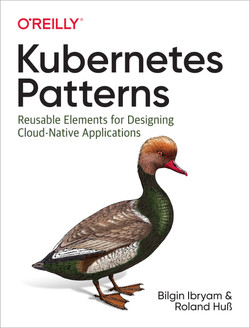

Kubernetes + Init Container Pattern + Minikube
- Run a voting application using an express website and redis
- Run locally using docker images and docker-compose
- Run locally using minikube
- Explore the Init Container pattern

Setup the project
Get the code from this github repository :
# download the code
$ git clone \
--depth 1 \
https://github.com/jeromedecoster/k8s-init-container-pattern.git \
/tmp/note
# cd
$ cd /tmp/note
The Init Container pattern
The Init Container pattern is the first of the structural models described in the Bilgin Ibryam and Roland Huß book

Kubernetes manages pods instead of containers and pods encapsulate containers. A pod may contain one or more containers.
A pod that contains one container refers to a single container pod and it is the most common kubernetes use case.
A pod that contains Multiple co-related containers refers to a multi-container pod.
Init Containers are the containers that should run and complete before the startup of the main container in the pod. It provides a separate lifecycle for the initialization.
Init containersalways run to completion.- It is possible to have 1 or more
init containers. - Each init container must complete successfully before the next one starts.
- So,
init containersare executed sequentially, one after another.
In the field of container orchestration, the ability to wait for an initialization phase is essential.
The initContainers property is therefore part of the syntax of kubernetes manifests :
apiVersion: v1
kind: Pod
metadata:
name: myapp-pod
labels:
app: myapp
spec:
containers:
- name: myapp-container
image: busybox:1.28
command: # ...
initContainers:
- name: init-myservice
image: busybox:1.28
command: # ...
Init containers are used to :
- Wait for a service to be available before launching a container that depends on it
- Installing software
- Setup a database
- Setting permissions on the file system
Run the projet locally
The project is a simple voting application. A website that uses a Redis database.

To test our application we launch redis via a docker image :
# run redis alpine docker image
$ make redis
1:C # oO0OoO0OoO0Oo Redis is starting oO0OoO0OoO0Oo
# ...
1:M # * Ready to accept connections
This command executes this script :
$ docker run \
--rm \
--name redis \
--publish 6379:6379 \
redis:alpine
We will interact with redis in a new terminal window :
# connect to redis container
$ CONTAINER_ID=$(docker ps --filter name=redis --format {{.ID}} | head -n 1)
$ docker exec -ti $CONTAINER_ID /bin/sh
/data # redis-cli KEYS '*'
(empty array)
/data # redis-cli incr up
(integer) 1
/data # redis-cli KEYS '*'
1) "up"
/data # redis-cli --raw get up
1
/data # exit
# close redis container
docker rm --force $CONTAINER_ID
Test the website in development mode (without redis)
Make sure Redis isn’t already running by closing all previous instances.
We will test the website without Redis being active.
# run local website using npm - dev mode (livereload + nodemon)
$ make npm
The site launches with a connection error :
env.NODE_ENV: development
env.WEBSITE_PORT: 3000
env.REDIS_HOST: 127.0.0.1
listening on port 3000
[ioredis] Unhandled error event: Error: connect ECONNREFUSED 127.0.0.1:6379
at TCPConnectWrap.afterConnect [as oncomplete] (node:net:1158:16)
This error is generated by trying to connect to the Redis instance :
const REDIS_HOST = process.env.REDIS_HOST || 'redis'
// ...
const redis = new Redis({
port: 6379,
host: REDIS_HOST
})
You can end the process with Ctrl+C
Test the website in development mode (with redis)
We will now launch the applications in the correct order, via different terminal windows :
# run redis alpine docker image
$ make redis
# run local website using npm - dev mode (livereload + nodemon)
$ make npm
The output is :
env.NODE_ENV: development
env.WEBSITE_PORT: 3000
env.REDIS_HOST: 127.0.0.1
listening on port 3000
We open http://localhost:3000
The test is conclusive. Both processes can be terminated.
Local test with docker-compose
Before testing in minikube, it’s a good idea to use docker-compose to orchestrate the containers that make up the application locally. It’s a good step.
The docker-compose.yml file is quite simple :
services:
vote:
build:
context: ./vote
dockerfile: Dockerfile.dev
args:
- NODE_ENV=development
- WEBSITE_PORT=4000
volumes:
- "./vote:/app"
ports:
- "4000:4000"
- "35729:35729"
networks:
- backend
depends_on:
- redis
redis:
image: redis:alpine
ports:
- "6379:6379"
networks:
- backend
networks:
backend: {}
We execute the following command :
# run the project using docker-compose (same as redis + npm)
$ make compose-dev
This command runs this script :
$ export COMPOSE_PROJECT_NAME=k8s_init_container
$ docker-compose \
--file docker-compose.dev.yml \
up \
--remove-orphans \
--force-recreate \
--build \
--no-deps
The output is :
redis_1 | 1:C 31 Mar 2022 08:25:22.753 # oO0OoO0OoO0Oo Redis is starting oO0OoO0OoO0Oo
redis_1 | 1:C 31 Mar 2022 08:25:22.753 # Redis version=6.2.6, bits=64, commit=00000000, modified=0, pid=1, just started
# ...
vote_1 | env.NODE_ENV: development
vote_1 | env.WEBSITE_PORT: 4000
vote_1 | env.REDIS_HOST: undefined
vote_1 | listening on port 4000
We open http://localhost:4000
The test is conclusive. We can complete the process.
Using mikinube
We start minikube :
$ minikube start --driver=docker
If minikube won’t start with a PROVIDER_DOCKER_NOT_RUNNING error or another error, try a hard reset :
$ minikube delete -p minikube
We check the context :
$ kubectl config current-context
minikube
We launch the Kubernetes dashboard in a new terminal window :
# new terminal window
$ minikube dashboard
To be able to use our local docker images within minikube it is imperative to :
- Target the local docker registry
- Rebuild the docker images in this registry
- use the
imagePullPolicy: Neverattribute in kubernetes manifests
# 1. target the local docker registry
$ eval $(minikube -p minikube docker-env)
# 2. rebuild the docker images in this registry
# /!\ must be in the same terminal window than previous command
$ make docker-build
# ...
Successfully tagged site:latest
The attribute is visible below :
spec:
containers:
- name: vote
image: site:latest
env:
- name: REDIS_HOST
value: "redis-svc"
ports:
- containerPort: 3000
name: vote
# 3. use the attribute
imagePullPolicy: Never
We create the kubernetes namespace with the ns.yaml template :
$ kubectl apply -f k8s/ns.yaml
namespace/k8s-init-container created
We launch the vote application with the vote.yaml template :
$ kubectl apply -f k8s/vote.yaml
deployment.apps/vote created
service/vote-svc created
Note that the Redis instance has not been started.
We can query the init-vote container logs :
$ kubectl logs -l app=vote -c init-vote -n k8s-init-container
nc: bad address 'redis-svc'
Waiting for redis-svc
The init-vote container is a busybox that runs a shell script that loops until the redis service is available :
initContainers:
- name: init-vote
image: busybox:latest
command: ['sh', '-c', 'until nc -vz redis-svc 6379 ; do echo "Waiting for redis-svc"; sleep 1; done;']
The current status shown in the Replica Sets panel :
In a new terminal window we connect within the cluster via another busybox :
$ kubectl run -i --tty --rm busybox \
--image=busybox \
--namespace=k8s-init-container \
--restart=Never \
-- sh
/
The current status shown in the Pods panel :
We will query the state of the vote-svc service from our busybox :

We can use nc :
/ nc -vz vote-svc 9000
# processus completed but nothing is returned
Nothing is returned but the processus is completed
If we test a bad name, we received an error :
/ nc -vz vote-something 9000
nc: bad address 'vote-something'
If we test a bad port, we received nothing :
/ nc -vz vote-svc 90
# processus not completed ... waiting
Nothing is returned and the processus is not completed
We can use nslookup :
/ nslookup -type=srv vote-svc.k8s-init-container.svc.cluster.local
Server: 10.96.0.10
Address: 10.96.0.10:53
vote-svc.k8s-init-container.svc.cluster.local service = 0 100 9000 vote-svc.k8s-init-container.svc.cluster.local
If we test a bad name, we received :
/ nslookup -type=srv vote-something.k8s-init-container.svc.cluster.local
Server: 10.96.0.10
Address: 10.96.0.10:53
** server cant find vote-something.k8s-init-container.svc.cluster.local: NXDOMAIN
In a new terminal window we now launch the redis instance with the redis.yaml template :
$ kubectl apply -f k8s/redis.yaml
We test the service with nc :
/ nc -vz redis-svc 6379
redis-svc (10.107.142.90:6379) open
Or with nslookup :
/ # nslookup -type=srv redis-svc.k8s-init-container.svc.cluster.local
Server: 10.96.0.10
Address: 10.96.0.10:53
redis-svc.k8s-init-container.svc.cluster.local service = 0 100 6379 redis-svc.k8s-init-container.svc.cluster.local
To test our site we search the access URL via the following command :
$ minikube service list
|----------------------|---------------------------|--------------|---------------------------|
| NAMESPACE | NAME | TARGET PORT | URL |
|----------------------|---------------------------|--------------|---------------------------|
| default | kubernetes | No node port | |
| k8s-init-container | redis-svc | No node port | |
| k8s-init-container | vote-svc | 9000 | http://192.168.49.2:31000 |
| kube-system | kube-dns | No node port | |
| kubernetes-dashboard | dashboard-metrics-scraper | No node port | |
| kubernetes-dashboard | kubernetes-dashboard | No node port | |
|----------------------|---------------------------|--------------|---------------------------|
It is possible to use get it directly like this :
$ minikube service --url vote-svc --namespace k8s-init-container
http://192.168.49.2:31000
By opening the URL we see that the website is working correctly :

The demonstration is over, we can destroy our resources.